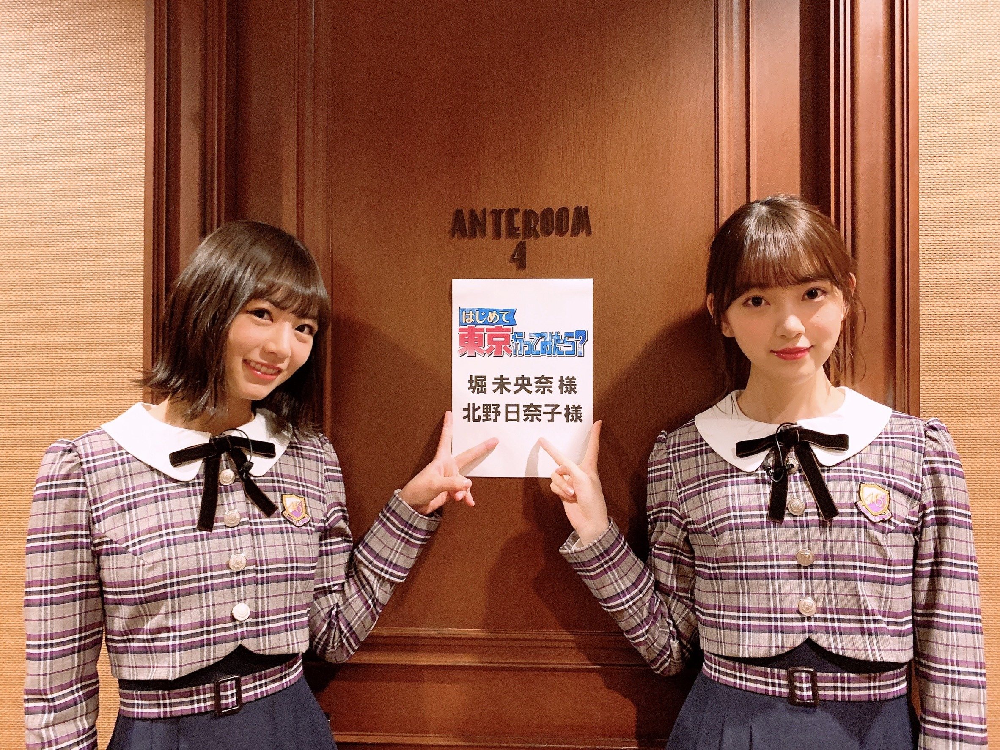
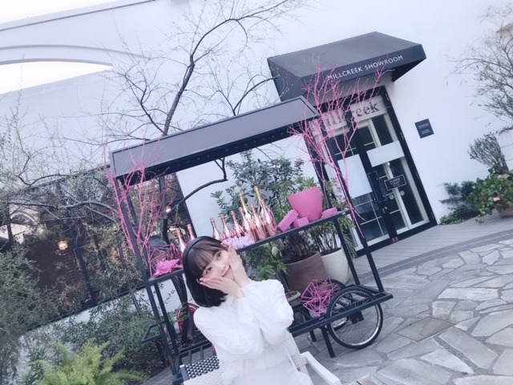
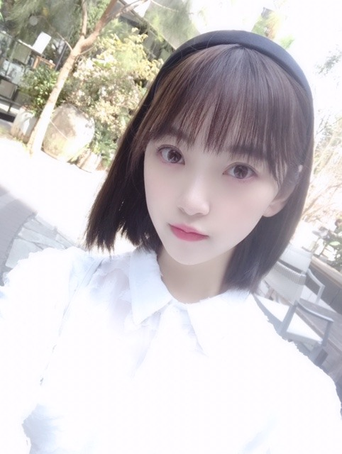

2019/0329Fri#2期6周年
明日3/30(土)18:30〜21:00 テレビ東京
「はじめて東京行ってみたら？」
2人でバラエティは初めてだったけど、
顔見合わせたりしてずっと笑ってました。笑
何だかんだ同い年だし同期だし
日奈子といると落ち着きます✨

みてね！
昨日、3月28日で
2期生6周年でした！！✨✨
いろんなことを思い出して、
辛かったこと悔しかったことも数え切れないくらいあったけどやっぱりメンバーといる時間がこの6年間圧倒的に多く占めていて家族みたいで、
その中でも同期は私にとって特別な存在です。
だから楽しかった思い出、嬉しかったことが6年間を振り返ったときにたくさん出てきました☺︎
それは2期みんなが頑張っていたから、そばにいてくれたから。
不器用ながらにちゃんと前を見て周りを見て
自分のやるべきこと、課題、目標を見つけて前へ進もうとする2期生。力強いしかっこいいし、そんな熱い想いを実は持っている所が大好きです
幸せになってほしいな...
って心から思います。
最近は1期生の方、そしてかりんの卒業もありより一層いま居るメンバーが手を取り合って頑張らないといけない時だなと感じます
大好きだからこそ、憧れてるからこそ、尊敬しているからこそ、先輩達に負けたくない！！って思います^^
見てきた景色、先輩の背中、同期の努力、後輩の活躍、全ての事実を忘れずに目に焼き付けてこれからの自分が何をできるか、新しいものを造っていける人になれるように頑張りたいです✨
これからも1期2期3期4期全員で1つのグループ
乃木坂46をよろしくお願いします！


明日はTGC！
横アリでお待ちしています！
では〜
2019/03/29 20:48


コメント(342)
おはよう。更新有難うございます。
乃木坂、こちらこそ宜しくお願いします。
乃木坂の第２章だね。
七瀬達一期が作り上げたものを越えるような乃木坂にしていこうね。全力で応援しますね。
今日、あまり天気がよくないけど、花粉は大丈夫かな？肌寒い。未央奈、体冷やさないようにね。では、叉、返信します。バイ
2期6周年おめでとう
これからも頑張ってね！！応援してます
坂道テレビで「型にはまりたくない」って言ってた未央奈さんの言葉が、かつて生駒さんが言ってた「初心に帰って自分の殻を破る」に似てて、しっかり先輩の背中を見ていて、素敵だなぁって思いました。
気持ちがしっかりしてる未央奈さんなら、どんな事でもやり遂げられると思います。
2期生6周年イヤーが良い年になると良いですね！
２期生6周年おめでとう！！
個性あふれる２期生が、
熱い想いを持った２期生が、
私は大好きです！
これからも応援していくからよろしくね！
負けるな２期生！輝け２期生！！
ホットギミック楽しみ！
原作を読んでちゃんと予習してから行きます。
大好きです！！！！！！
私は二期生推しで、未央奈神推しなのでほんとに
二期生のみんなのことを応援しています！！！！
未央奈はアンダーも経験して、選抜も経験してるよね。未央奈はどこにいても輝いているし、ほんとにメンバー想いなんだなって思ってるよ。そんな未央奈と出会えたことは私の人生の誇りです…！！！！！！
また、乃木坂46のファンになれたことも人生の誇りです！！！！
ZIP春フェス、ほんとに最高だったよ！！！！
これからも神推しでいるし、ずっと応援してます！！！！大好きです！！！！！！
二期生6周年おめでとう！
ブログ更新ありがと！
もう6周年か〜そんなに経つんだね
二期生メンバー大好き
乃木坂46がどんどん大きくなってほしい！
応援してます！！
ホットギミック楽しみだぁ〜
絶対見る！
これからも頑張ってね！
お疲れ様です。
TGC頑張って！テレビは録画予約しました(*^^*)
家に帰ったらすぐに観ます。
そして！2期生6周年おめでとうゝ(´▽｀)／♪
ファン歴はそんなに長くないので1、2期生の最初の頃は
見ていなかったけど、これからもずっと応援していきます！
6年間で様々な経験をしたのだと思います、その経験を
今後の人生に生かせるように、大変な時期だとは思うけど
頑張ってね(*´꒳`*)
でわ、お体には気をつけて。
またコメントしますっ
2期生6周年おめでとう!
これからも応援団してます!
2期生6周年おめでとうございます
今日はTGCがんばって(o^^o)
ザンビも最終回観ました、最後は切なかったなぁ
雑誌やテレビも沢山見てるよ。
これからも頑張ってね。
ブログ更新ありがとう！
2期生6周年おめでとう！この6年でみんな成長している姿が見れてすごく嬉しい！
2期生が入って来た時から、ずっと好きだよ！乃木坂46に入ってきてくれてありがとう！2期生の仲の良さが好き！かりんちゃんが卒業して、また1人減ってしまうけど、2期生は永遠だから！
みおなのこと大好きです！
だいぶ遅いけどおはようございます
はじめて東京行ってみたら？は録画したので観ますね
堀北コンビは、好きなコンビ2位なので楽しみにしてます
6周年おめでとうございます
当時は、お互い16歳って事ですね（もうそんなに経つとは）
かりんちゃんも卒業で二期生の数が一桁になってしまいますが、堀ちゃんならきっとまとめる事が出来るから頑張って下さい（過去の頑張りを見ればできる気がします）
ザンビ最終回も観ました
前回のコメント眠くて少し雑でしたが、堀ちゃんの演技が上手くて、またたくさんドラマに出て欲しいです
堀ちゃんまで、ザンビになってしまってそんなーって1人で嘆いていました笑
街も地獄になっていて、まるでバイオハザードでした
続編作るなら、飛鳥はミラジョボビッチの立ち位置だね（私は死なずに戦うみたいな終わり方だったし）
TGC頑張って下さい
今日の写真もスーパー可愛いです
ありがとうございました
これからもいろんな人が卒業しても
乃木坂46を応援し続けます！
頑張ってください！
6周年おめでとう
これからもずっと応援します
今朝の体調はいかがですか？ 今朝のお目覚めは良かった？ 未央奈さん！ブログの更新！本当にありがとうございました m(_ _)m 未央奈さん！カチューシャ☆彡よく似合ってますネ❤️❤️❤️❤️❤️❤️❤️❤️❤️❤️❤️❤️❤️❤️ 可愛い〜❤️❤️❤️❤️❤️❤️❤️❤️❤️❤️❤️❤️❤️❤️❤️❤️ (*^_^*) ２期生！もう６周年！ 未央奈さん！これから７周年目も新たな１ページを切り開くつもりで、頑張って下さいネ❤️❤️❤️❤️❤️❤️❤️❤️❤️❤️❤️❤️❤️❤️❤️❤️❤️ ザンビになっても友達思いで、優しい未央奈さん！ブログでは、未央奈さんの乃木坂に対する熱い思いが、ヒシヒシと伝わってきましたね！ 乃木坂が、大好き❤️で、常にグループの事を考えている未央奈さん！これからも乃木坂を大いに盛り上げていって下さいネ❤️ あと今夜のテレ東の番組も、なんとか見ますからね☆彡 それから映画の撮影は、順調ですか？ この映画を機に未央奈さんが、女優として大いに羽ばたいていってくれることを願っています！ あと今日のTGC！も、頑張ってネ❤️❤️❤️❤️❤️❤️❤️❤️❤️❤️❤️❤️❤️❤️ モデルをしている時の未央奈さんも、本当に素敵です！！ arも可愛くて、たまらないです！ (o^^o) 来月号の俳句☆彡も、楽しみにしていますから❤️❤️❤️ じゃあ、未央奈さん！今日も良い１日を過ごして下さいネ❤️❤️❤️❤️❤️❤️❤️❤️❤️❤️❤️❤️❤️❤️❤️❤️ 今日も未央奈さんにとって、幸せな１日になりますように☆彡☆彡☆彡 未央奈さん！風邪引かないでね❤️❤️❤️❤️❤️ ブログ！本当にありがとうございました！ ( ´ ▽ ` )ﾉ
今日の番組録画して見ます！！！
僕も堀ちゃんを応援し始めてはや5年、感慨深いものがあります。
「幸せになってほしいな...って心から思います。」
この言葉大好きです。
本当にみんなのことが大好きで、大切で、、
そんな堀ちゃんの思いがひしひしと伝わってくる言葉ですね。
成長していく乃木坂を、そして堀ちゃんを、これからもずっと見守っていきたいと思います☺️
また大舞台やね、明日のTGC頑張って！！
これからもその熱い気持ちで頑張ってくれな。
オレも頑張るからヽ(・∀・)ノ
そうだよねー。
卒業は寂しいけど、
次は進化する為のって感じなのかな？
2期生は前に出る子が少ないけどその分各々が内に秘めてる物が強いよね
これが認知され始めたらものすごい強い力になると思うから、これからも注目してるよ
堀ちゃん大好きです
本当に素敵なグループだと思います。
それぞれが幸せでありますように。
大切な仲間たちと共に、
これからも坂道を上り続けられますように、
期待しています。
堀北コンビでTV出演も楽しみ。
TGC、楽しんでね。
握手会で名古屋に行ったときでも、ゆっくり出来たら名古屋の街を散策も良いかもしれないね！
3月28日は乃木坂46に二期生が加入した記念日。今年で晴れて六周年。おめでとうございます。
奇跡の一期生とともに活動を始めた初期の頃から、二期生のがんばる姿を僕らはずっと見てきました。
決して平坦で楽な道のりばかりではなかったと思いますが、皆で力を合わせ手に手をとりあって坂を上ってきた不屈の二期生の、これからのさらなる活躍を願っています。
そんな頼もしい二期生同学年の堀さんと北野さんコンビで、今夜は『はじめて東京行ってみたら？』にご出演。楽しみです。
ではまたコメント寄せますね。
さらばだ、また会おう！（気球に乗って去りぬ〜）
なんかあしゅみなみおなでやってほしいなーw
ブログ更新ありがとう～
そして2期生6周年おめでとう
これからもほりっぴ～を2期生を乃木坂を推していきたい
まだまだ楽しみがたくさんあるよね
足元も見ながら前に進んでいこう
今日は仕事でTGC行けんけどがんばってね
今日の天気は曇りですよね❤️
ただいま用事で東京です❤️
帰って夕方は飲み会です。
てか、
最近はあっーーーと
ゆうま過ぎていく毎日……
あっ、
今日はガルアワですよね❤️
相変わらず行けないけど……
はい❤️
届け❤️
元気❤️
＆
パワーーーーーーー❤️
直接応援したい‼️
…………………泣
できないから……
書く❤️❤️❤️
うん❤️
応援だーーー❤️
どんどん❤️
いけぇーーー❤️
初心だーーー❤️
素敵だからこそ❤️
もう一歩、
深いわたしを魅せてこーい❤️
ね❤️
ね❤️
ファイティン❤️
最近の活動はすごい‼️
ドラマに映画にモデルにと……
すごいの一言です❤️
だで、
無理しないでくださいね❤️
（＾_＾）Ｖ
☆☆☆☆☆☆☆☆☆☆☆☆☆☆
みおなちゃん❤️
6周年おめでとう㊗️
これからです❤️
。
リアルタイムで必ず観ます。
体調を崩さないように気をつけて下さいね。
先日のレコメン！の重大発表は、日向坂46の加藤史帆ちゃんが新たにレコメン！ファミリーになるというお知らせでしたね！
良い発表で良かったです♪☆
「はじめて東京行ってみたら？」は地域の関係で見れないみたいです、残念です
本日TGCお疲れ様です。明日の握手会も頑張って下さい。それではまた
2期生6周年おめでとうございます！2期生の仲の良さが大好きです。辛い時も悲しい時もお互いに共有して強くなったからこそ今の2期生があると思います！一期生の方達も2期生の姿を見て安心して卒業できると思います。これからもずっと応援します。2期生が大好きです。
2期生6周年おめでとうございました✨
2期生には特別な想いがあるでしょうし、
2期生の結束力も更に強めて下さいね◎
乃木坂全体に対しても貢献して欲しいし、
個人としての活躍にも期待しています☆
未央ちゃんは可能性の塊だと思ってます♡
カチューシャもとっても似合ってます！！
この写真の表情にもとっても弱いです～♡
日奈子ちゃんとの番組も楽しみですよー！
日奈子ちゃんを見ると、ほっこりします♪
TGCの方もお疲れ様です☺
ブログ更新ありがとうございます！
本日のTGCお疲れ様です！
明日は大阪で握手会ですね！明日でいよいよ美彩さんが卒業しますよね！
美彩さんに最高の花道を飾って上げて下さい！
私は行けないですけれども、今日の疲れをしっかり取って明日の握手会楽しんで下さい！
はじめて東京行ってみたら？ 録画しました♬︎♡
6周年おめでとう！！これからも応援します、大好き︎ ︎☺︎
２期生6周年⁉かな、おめでとう。
ブログに書いとるみたいに、１期生、３期生、４期生、そして２期生。
みんなで乃木坂
切磋琢磨して頑張ってほしいです
そんな乃木坂大好きやし応援します
堀ちゃんも乃木坂勿論やけど、個人での仕事も頑張りや❗
前に生駒ちゃんが言っていた個人の頑張りはチームの為にもなる❗
あの言葉が今の乃木坂の躍進のひとつでもあると俺は思います
きょうはTGC、明日は握手会。
明日は行けんけど大阪を少しでも満喫してくださいな
ではではまたね。
体調気をつけてくださいね☺
きいちゃんと良きコンビやな
ほなね、堀ちゃん❗
またアメトークの話をしてほしいな。
ブログ更新、ありがとうございます♪
『はじめて東京行ってみたら』、もうすぐ始まりますね‼︎
堀北コンビ大好きだし、ワクワクが止まりません♪
楽しみにしてます…‼︎
そうそう、堀北コンビといえば。
『ゴルゴンゾーラ』、聴きましたよ♪
タイトルだけ聞いたら、まったりとクセのありそうな感じだけど、実際は打って変わって爽やかなメロディ(笑)。
そして、女の子らしさ全開の可愛らしい歌詞がとってもいいですね‼︎
ちなみに、自分はゴルゴンゾーラもモッツァレラも大好きです♪
って、ただのチーズ好きなんだけど(笑)。
チーズは熟成されて美味しくなる。
2期生も、6年の長い時間を経て、味の深みが出てきましたね♪
これからの2期生のますますの活躍に期待してます…‼︎
ではでは、また。
明日も未央奈にとっていい1日になりますように♪
堀北コンビの夢の共演！！
コメントする